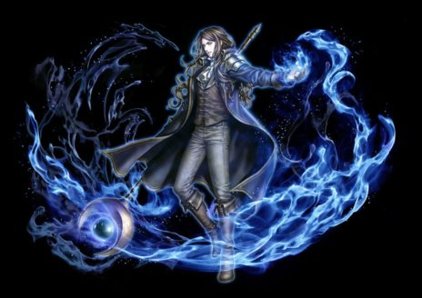

| 氷嵐の大魔導師 |
|  |
| 氷の心 |
|
<情報>
<持続時間>
- 条件によって無敵状態発動
<説明>
- 体力が尽きた瞬間でも冷静を保つことが出来る。
制限時間が過ぎた後、体力が一定以上ある場合は戦闘不能状態にならない。
<補足>
HP0になっても5秒間は死亡しないが、5秒後にHP25％以下の場合、死亡する。
クールタイム180秒。 |
<スキルタイプ>
専用パッシブスキル |
<前提スキル>
- なし |
<パワーアップ形態>
- なし |
| クーラントキャノン |
|
<情報>
- スキル難易度 5
- 必要CP 120
- 消費CP [n]
- 獲得CP [n]
- 段階別ダメージ適用[60, 80, 100％]
- 爆発ポイントに近いほどダメージが増幅
<攻撃関連>
- ◆ 水ダメージ [n]~[n]
- 攻撃速度 武器速度
<説明>
- 小範囲の敵に水大砲を発射する。従来スキルより、鈍化効果が上昇。 |
<スキルタイプ>
専用強化スキル |
<前提スキル>
- ウォーターキャノン Lv50 |
<パワーアップ形態>
- 威力, 射程距離, 範囲 |
| スキルLv |
1（+0） |
1（+1） |
1（+2） |
1（+3） |
1（+4） |
1（+5） |
| 消費CP |
325 |
330 |
335 |
340 |
345 |
350 |
| 獲得CP |
200 |
204 |
208 |
212 |
216 |
220 |
| 水ダメージ |
335〜365 |
341〜371 |
347〜377 |
353〜383 |
359〜389 |
365〜395 |
| 凍結時間（秒） |
6 |
| 最大射程距離（m） |
6 |
6.05 |
6.1 |
6.15 |
6.2 |
6.25 |
| 効果範囲（m） |
1.5 |
1.53 |
1.56 |
1.59 |
1.62 |
1.65 |
| アイシクルスタラグマイト |
|
<情報>
- スキル難易度 3
- 必要CP 30
- 消費CP [n]
- 獲得CP [n]
- 敵の攻撃無視
<説明>
- 自分の足元に急速に大きくなる氷柱を召喚する。
ウィザードはその氷柱に上がることができ、接近攻撃を行うことも受けることも不可能になる。氷柱破壊時、周辺の敵を少しの間凍らせる。 |
<スキルタイプ>
強化スキル |
<前提スキル>
- アイススタラグマイト Lv50 |
<パワーアップ形態>
- 回避率, 持続時間, 氷柱HP |
| スキルLv |
1（+0） |
1（+1） |
1（+2） |
1（+3） |
1（+4） |
1（+5） |
| 消費CP |
180 |
183 |
186 |
189 |
192 |
195 |
| 獲得CP |
175 |
178.5 |
182 |
185.5 |
189 |
192.5 |
| 回避率（％） |
12.5 |
12.75 |
13 |
13.25 |
13.5 |
13.75 |
| 持続時間（秒） |
155 |
158 |
161 |
164 |
167 |
170 |
| 氷柱HP |
600 |
610 |
620 |
630 |
640 |
650 |
| 氷柱防御力 |
250 |
255 |
260 |
265 |
270 |
275 |
| 氷結時間（秒） |
3 |
| フロストバリア |
|
<情報>
- スキル難易度 4
- 必要CP 60
- 消費CP [n]
<説明>
- 指定した味方の周りに強力な水の防御膜を形成して防御力を高める。自分自身に使用する場合、さらに防御力が増加。
<補足>
自分自身に使用する場合、防御力追加上昇100％ |
<スキルタイプ>
強化スキル |
<前提スキル>
- ファウンテンバリア Lv50 |
<パワーアップ形態>
- 防御力, 持続時間 |
| スキルLv |
1（+0） |
1（+1） |
1（+2） |
1（+3） |
1（+4） |
1（+5） |
| 消費CP |
175 |
178 |
181 |
184 |
187 |
190 |
| 防御力上昇量 |
22 |
22.4 |
22.8 |
23.2 |
23.6 |
24 |
| 防御力上昇（％） |
100 |
102 |
104 |
106 |
108 |
110 |
| 防御力追加上昇（％） |
100 |
| 持続時間（秒） |
260 |
264 |
268 |
272 |
276 |
280 |
| 最大射程距離（m） |
4 |